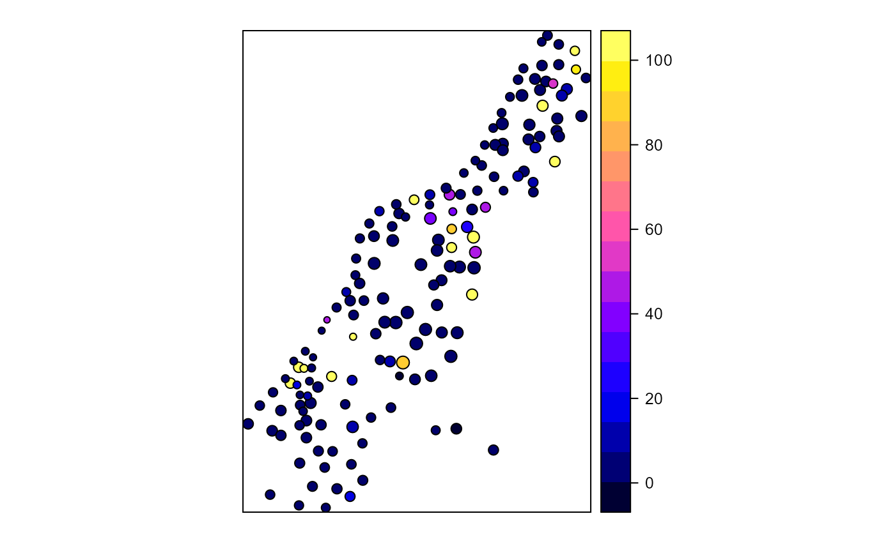

Calculates proximity index for a set of polygons
proximity.index(x, y = NULL, min.dist = 0, max.dist = 1000, background = NULL)
Arguments
| x | A polygon class sp or sf object |
|---|---|
| y | Optional column in data containing classes |
| min.dist | Minimum threshold distance |
| max.dist | Maximum neighbor distance |
| background | Optional value in y column indicating background value |
Value
A vector equal to nrow(x) of proximity index values, if a background value is specified NA values will be returned in the position(s) of the specified class
References
Gustafson, E.J., & G.R. Parker (1994) Using an Index of Habitat Patch Proximity for Landscape Design. Landscape and Urban Planning 29:117-130
Author
Jeffrey S. Evans <jeffrey_evans@tnc.org>
Examples
library(sp) library(rgeos) # Create test polygons data(meuse) coordinates(meuse) = ~x+y meuse_poly <- gBuffer(meuse, width = meuse$elev * 5, byid = TRUE) meuse_poly$LU <- sample(c("forest","nonforest"), nrow(meuse_poly), replace=TRUE) # All polygon proximity index 1000 radius ( pidx <-proximity.index(meuse_poly, min.dist = 1) )#> [1] 4.0691083 2.6466057 6.7582495 3.6211467 8.5777691 #> [6] 6.3107075 7.5021144 11.6112601 135.6778243 7.1562374 #> [11] 8.0282170 10.1865047 11.3193271 174.8850681 50.6947541 #> [16] 12.7122574 27.0654203 163.2308864 5.9793477 96.3136937 #> [21] 58.1292009 5.5735312 4.2505419 44.6475848 42.8492433 #> [26] 5.5938752 149.4281415 51.2314371 91.4148851 2.6817618 #> [31] 2.9612329 7.1385269 4.9317746 835.1449283 863.8099437 #> [36] 4.3364655 5.6939296 4.9948962 3.9143680 4.5444255 #> [41] 6.1662745 10.9387817 13.0696514 434.8304739 149.4057313 #> [46] 7.5584335 11.2256324 17.3882633 9.0376185 7.3254827 #> [51] 4.2131538 5.7236787 34.3584393 6.5586748 4.6921334 #> [56] 5.2407695 15.7029484 5.9051589 51.7105874 10.6653019 #> [61] 7.1375546 4.7308111 4.0837690 3879.8989762 5.9824296 #> [66] 3.7368343 2.7452016 2751.2569748 13.8128904 15.4606506 #> [71] 14.2598696 7.7202356 14.4515749 55.2737719 41.8612908 #> [76] 17.1367352 492.4604630 4.6827225 5.9717959 5.7555414 #> [81] 10.3919211 1.2412646 2.7163642 17.3040371 7.7205413 #> [86] 11.7109409 9.4622190 6.9922952 5.6637993 2.6807066 #> [91] 10.2998316 1.8040876 3.2301580 3.0214332 6.9487796 #> [96] 3.0561684 2.7260015 4.8758878 34.4242384 8.3126468 #> [101] 2.8243319 1.7894614 7.1192568 12.3329930 4.1661313 #> [106] 2.4941288 7.9570808 2.7466233 4.6879856 53.3815889 #> [111] 2120.4412903 11.4208445 9.5953485 4.6588709 2827.5737375 #> [116] 5.9300668 4.1231358 0.9167226 9.4474281 4.4985901 #> [121] 9.2947793 11.8890387 6.1728133 120.0154071 8.3578787 #> [126] 393.6277570 20.2122307 21.8047057 20.9520726 89.9439135 #> [131] 13.3122768 8.9606043 14.3696212 26.1369201 15.1469821 #> [136] 14.2984925 9.3501514 309.1889785 395.7221805 291.2010187 #> [141] 4.5611518 2.9938017 2.4230841 4.5338157 5.0095533 #> [146] 1.7749416 1.2959121 0.7084818 2.4987104 2.6685246 #> [151] 8.1022015 10.0690246 2.9409043 3.4987681 0.1884891pidx[pidx > 100] <- 100 # Class-level proximity index 1000 radius ( pidx.class <- proximity.index(meuse_poly, y = "LU", min.dist = 1) )#> [1] 3.294282e+00 4.290776e-01 1.243883e+00 1.604680e+02 9.499911e+01 #> [6] 2.316585e+00 6.722573e-01 2.908815e+00 4.665213e+00 9.408488e+00 #> [11] 9.947692e+00 1.463165e+02 3.555373e+00 7.631488e-01 7.089596e-01 #> [16] 2.732863e+00 4.512374e+00 3.696158e+00 2.585097e+00 3.256225e-01 #> [21] 3.668733e+00 3.599250e+00 1.425955e+00 4.299216e+00 5.566744e+00 #> [26] 1.853422e+00 1.878212e+00 1.110384e+01 2.937127e+00 1.821965e+00 #> [31] 1.183481e+02 2.354199e+00 1.235995e+01 1.224123e+01 3.772465e+00 #> [36] 1.436612e+00 1.390802e+00 1.812419e+00 1.663672e+00 1.451508e+00 #> [41] 3.500349e+00 4.612958e+01 6.592120e+00 2.526119e+01 1.003136e+00 #> [46] 4.100942e+01 8.920775e+01 4.282638e+02 3.463507e+00 1.908194e+00 #> [51] 3.335599e+00 2.241522e+00 7.605047e+00 2.750037e+03 4.123325e+00 #> [56] 7.371148e+00 1.071663e+00 2.975188e+00 3.386020e+00 7.650077e-01 #> [61] 7.863166e-01 1.562366e+00 3.634207e+00 7.570321e+00 7.453502e-01 #> [66] 4.704488e+01 2.118383e+03 2.009549e+00 1.294579e-01 2.415250e+00 #> [71] 6.410884e+00 3.833918e+02 1.885555e+01 2.026699e+00 7.030699e+00 #> [76] 7.924055e+00 2.843775e-01 2.805575e-01 3.561369e+00 3.535028e+00 #> [81] 3.667829e+00 3.311421e+00 1.706540e+00 5.592361e+01 3.182964e+00 #> [86] 5.545559e+00 8.322498e+02 8.625234e+02 2.908488e+00 3.415019e+00 #> [91] 5.347815e+00 3.667214e+00 1.854930e+00 1.256198e+00 1.640988e+00 #> [96] 1.699769e+00 8.852561e+00 3.876984e+03 1.877535e+00 4.123216e+00 #> [101] 3.640813e+00 1.104316e+00 7.248399e+00 1.911219e+00 1.610313e+00 #> [106] 2.816808e+03 1.352976e+00 5.624929e+00 3.348357e+00 8.815287e+01 #> [111] 1.362080e+01 7.176414e+00 3.065642e+00 4.195462e+00 4.525480e+00 #> [116] 1.822586e+00 5.788220e+00 8.441812e-02 9.119686e-01 1.907082e+00 #> [121] 3.704004e+00 5.281644e+00 5.794666e+00 4.432388e+01 4.202667e+01 #> [126] 1.470516e+02 4.932932e+01 1.965141e+00 1.692873e+00 1.648694e+00 #> [131] 2.279054e+00 1.912779e+00 3.066484e+00 1.989303e+00 3.307552e+00 #> [136] 2.714378e+00 1.774366e+00 1.796612e+00 2.863612e+00 5.323905e+00 #> [141] 1.822709e+00 4.306337e+00 2.632085e+00 1.566964e+01 1.077950e+00 #> [146] 1.877225e+00 5.883807e+00 9.118132e-01 1.195186e+00 1.724343e+00 #> [151] 2.494799e+00 3.147614e+00 1.682421e+00 1.207022e+01 6.555152e-01pidx.class[pidx.class > 100] <- 100 # plot index for all polygons meuse_poly$pidx <- pidx spplot(meuse_poly, "pidx")# plot index for just forest class forest <- meuse_poly[meuse_poly$LU == "forest",] spplot(forest, "cpidx")